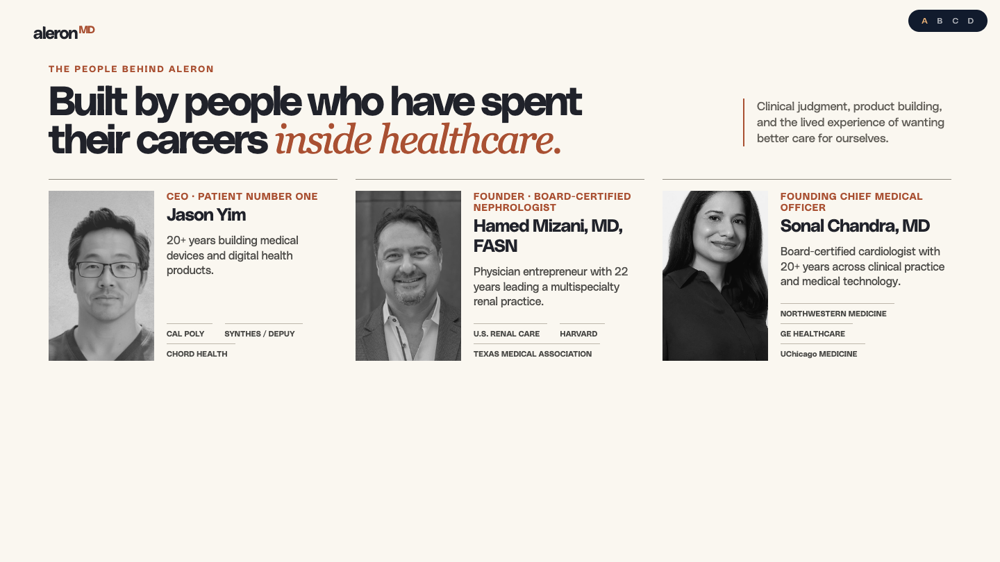
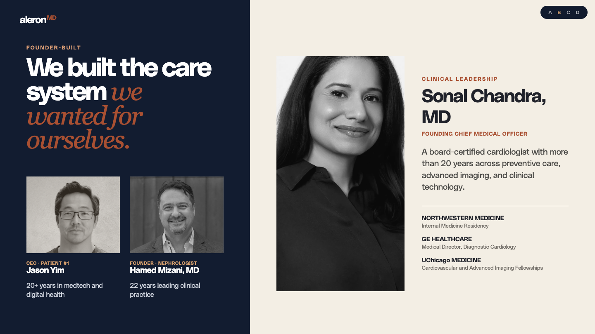
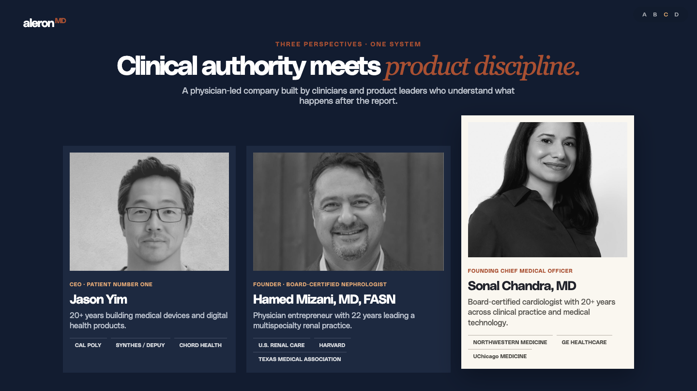
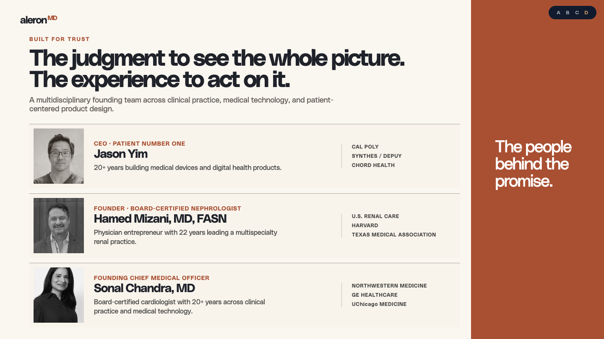

A. Equal editorial authorityBalanced and democratic. All three leaders carry equal visual weight.
Open full-size →Four divergent layouts using the same portraits and credential set. Standalone study, not added to the live deck.

A. Equal editorial authorityBalanced and democratic. All three leaders carry equal visual weight.
Open full-size →
B. Founder story + clinical authorityJason and Hamed establish the origin. Sonal becomes the clinical trust anchor.
Open full-size →
C. Clinical leadership centerpieceDark, premium triptych with Sonal elevated as Founding CMO.
Open full-size →
D. Credential-led trust ledgerMost institutional. Reads quickly and gives the proof marks the most room.
Open full-size →